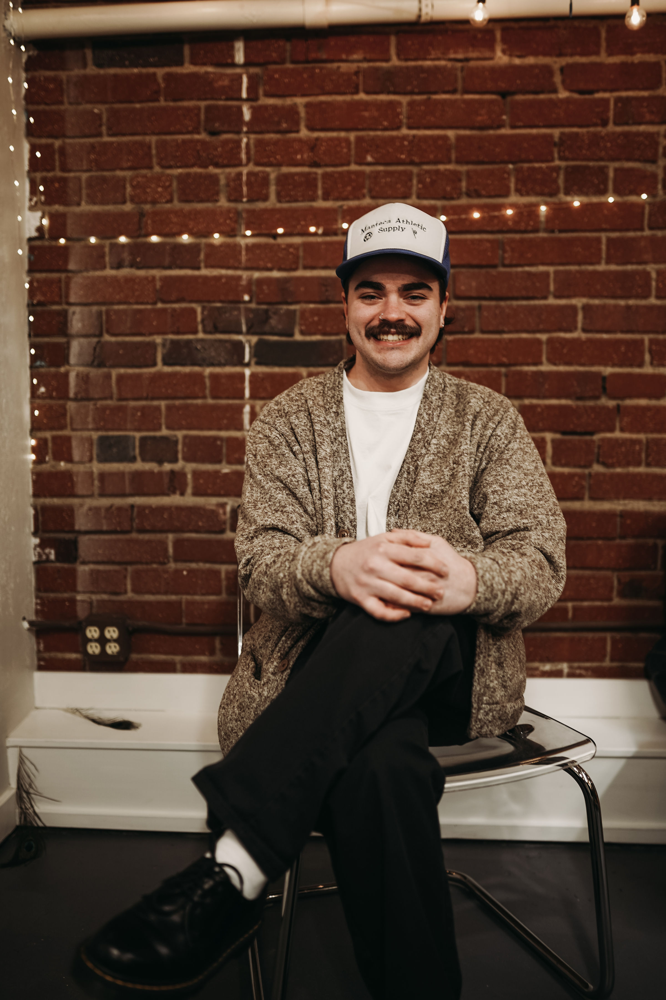

I am Briston Widmann, I am a multi-media artist. I currently intern for Backyard Artists a Boise non-profit where I currently take video and photos for the events that we host, in addition to website design/development. I am a senior at Boise State University, where I study Integrated Media with an emphasis in Media Production and a minor in Visual Arts. Throughout my collegiate journey I have learned many valuable skills from material design and creation in my sculpture classes, to web design and coding. The skills I have obtained over my years in college have made me into a versatile producer of media, and my background in creative art shines through in all of my projects.
